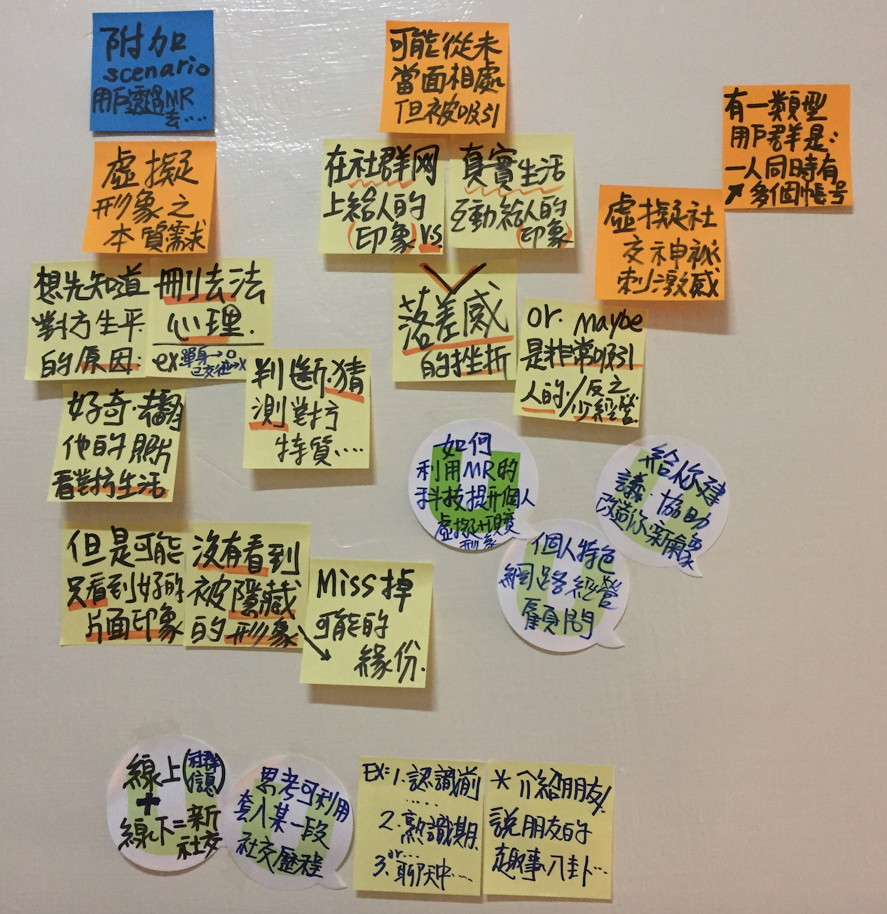

Pitch by Yo Tseng,曾子祐 · Oct 21, 2017 at 9:36 AM 💡 虛擬與現實社交行為本質探討 我覺得現階段大家可以一起做：深化社交的本質的用戶研究 就像老師咪聽提到的「奶昔故事」去挖掘目前使用者的「虛擬形象之行為需求」 MR社交的換句話說：「將線上虛擬社群信息整合線下真實相處的體驗」 圖片上我發想陳列了幾個行為的原因，下一次討論我們可以試試看這個方法，找出更多附加深化的情境。  image.png 2.88 MB • Download 👏 Comments & Events Min 洪仕閔, 碩士生 這是我稍微回顧了一下社會學與人類學對於網路社群進行的研究，因為回顧的數量有限，而且還看得有點快QQ，如果大家有疑惑或是想找原文，可以跟偶說說喔喔喔主要可以分成～～實體社群轉換成網路社群的意義：從實體社群進入到網路社群，比較像是利用新的工具（網路）來進行我們熟悉的社交方式，所以會展現出不同地區的文化特色網路互動特色：我們利用網路進行互動時，因為缺乏非言語線索（網路通常只是利用文字），以及社會情境線索（網路聊天比較不會被現在在幹嘛影響），往往會讓互動有較高的跳耀性與自我揭露性 網路社群與實體社群差異研究：網路與實體互動最大的差異在於非語言線索以及場域的逃離性 匿名與實名研究：實名制的網路行為（像是臉書，或是以前的無名），仍舊會受網路的特性影響 網路世代的孤寂：網路的確讓我們彼此能夠更方便交流，也讓聊天跨越時間與空間，但依舊造成了新的孤寂感～～ 紅字是我覺得重要的部分藍字是我的個人雜談https://docs.google.com/document/d/1nQWm3_EDMWX968sZpz_VXIa69UefGu9EYFCiLOyVxEw/edit?usp=sharing 👏 Oct 22, 2017 at 6:30 PM Notified 5 people Hsien-Hui Tang 唐玄輝, 總監 MR 可以補充虛擬互動時，的非言語線索及社會情境線索同時MR 可以補充實體互動時，的網路關係及網路社群線索 👏 👏 Oct 25, 2017 at 1:12 PM Notified 5 people Yo Tseng,曾子祐, 碩士生 已加入 今日會議記錄 keypoint， 下次我們會做「現實互動」跟「虛擬互動」的優點與不足點，做比較分析 👏 Oct 25, 2017 at 1:24 PM Notified 5 people
Min 洪仕閔, 碩士生 這是我稍微回顧了一下社會學與人類學對於網路社群進行的研究，因為回顧的數量有限，而且還看得有點快QQ，如果大家有疑惑或是想找原文，可以跟偶說說喔喔喔主要可以分成～～實體社群轉換成網路社群的意義：從實體社群進入到網路社群，比較像是利用新的工具（網路）來進行我們熟悉的社交方式，所以會展現出不同地區的文化特色網路互動特色：我們利用網路進行互動時，因為缺乏非言語線索（網路通常只是利用文字），以及社會情境線索（網路聊天比較不會被現在在幹嘛影響），往往會讓互動有較高的跳耀性與自我揭露性 網路社群與實體社群差異研究：網路與實體互動最大的差異在於非語言線索以及場域的逃離性 匿名與實名研究：實名制的網路行為（像是臉書，或是以前的無名），仍舊會受網路的特性影響 網路世代的孤寂：網路的確讓我們彼此能夠更方便交流，也讓聊天跨越時間與空間，但依舊造成了新的孤寂感～～ 紅字是我覺得重要的部分藍字是我的個人雜談https://docs.google.com/document/d/1nQWm3_EDMWX968sZpz_VXIa69UefGu9EYFCiLOyVxEw/edit?usp=sharing 👏 Oct 22, 2017 at 6:30 PM Notified 5 people
Hsien-Hui Tang 唐玄輝, 總監 MR 可以補充虛擬互動時，的非言語線索及社會情境線索同時MR 可以補充實體互動時，的網路關係及網路社群線索 👏 👏 Oct 25, 2017 at 1:12 PM Notified 5 people
Yo Tseng,曾子祐, 碩士生 已加入 今日會議記錄 keypoint， 下次我們會做「現實互動」跟「虛擬互動」的優點與不足點，做比較分析 👏 Oct 25, 2017 at 1:24 PM Notified 5 people
 👏
👏
主要可以分成
～～
實體社群轉換成網路社群的意義：
從實體社群進入到網路社群，比較像是利用新的工具（網路）來進行我們熟悉的社交方式，所以會展現出不同地區的文化特色
網路互動特色：
我們利用網路進行互動時，因為缺乏非言語線索（網路通常只是利用文字），以及社會情境線索（網路聊天比較不會被現在在幹嘛影響），往往會讓互動有較高的跳耀性與自我揭露性
網路與實體互動最大的差異在於非語言線索以及場域的逃離性
實名制的網路行為（像是臉書，或是以前的無名），仍舊會受網路的特性影響
網路的確讓我們彼此能夠更方便交流，也讓聊天跨越時間與空間，但依舊造成了新的孤寂感
～～
藍字是我的個人雜談
https://docs.google.com/document/d/1nQWm3_EDMWX968sZpz_VXIa69UefGu9EYFCiLOyVxEw/edit?usp=sharing
同時
MR 可以補充實體互動時，的網路關係及網路社群線索